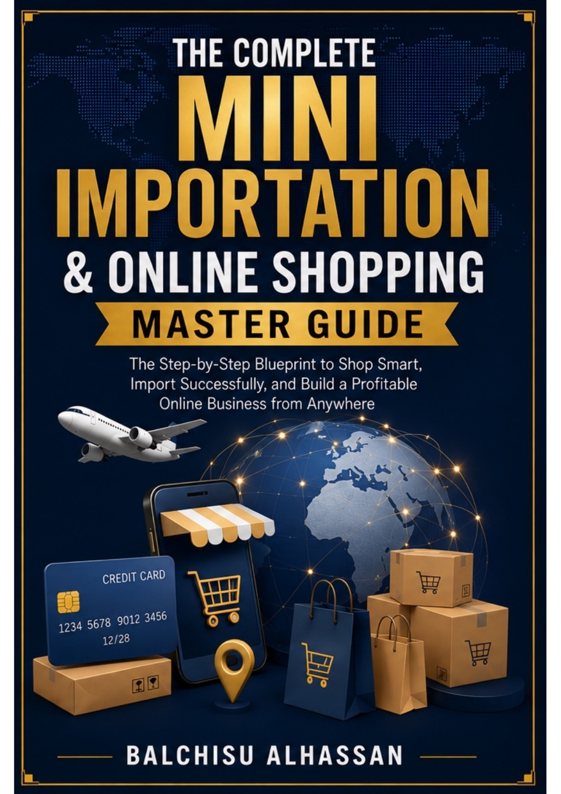
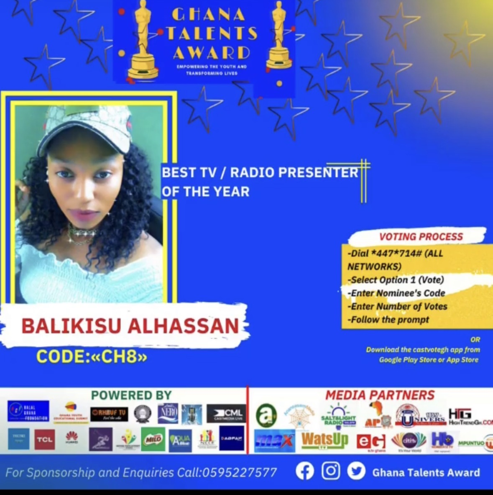
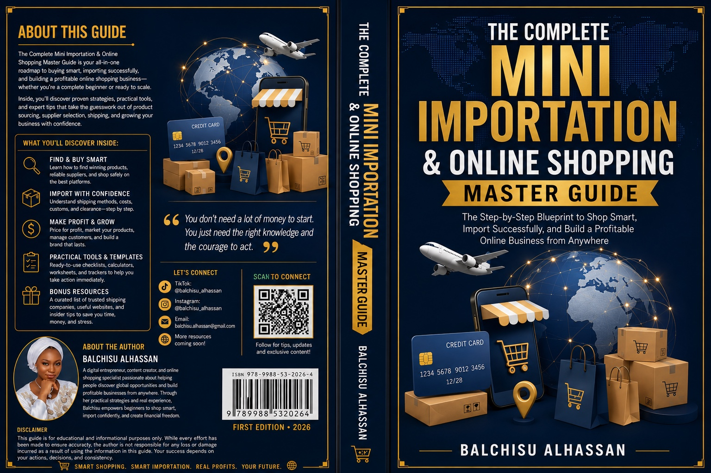

A career built around communication and storytelling.
Balchisu Alhassan, publicly known as Lady Kizz, is a Ghanaian broadcast journalist, presenter, digital content creator and author. Her work spans traditional broadcasting, social media and publishing, with communication, storytelling and audience connection at the centre of her professional identity.
She studied Broadcast Journalism at All Stars Media College in Accra, completing her Diploma in 2019. Her professional experience includes broadcasting and presentation work with Radio Tamale 91.7 FM.
As Lady Kizz, she has developed a public-facing digital identity across social platforms, combining her media background with short-form video, social content and AI-assisted creative work.
Radio & Presentation
Radio Tamale 91.7 FM
Balchisu Alhassan was featured as the host of The Executive Lunch Reloaded on Radio Tamale 91.7 FM. Radio Tamale promotional material dated 5 June 2023 identifies her as host and gives the programme schedule as Monday to Thursday, 12:00 p.m. to 2:30 p.m.
Ghana National Talent Awards
Best TV / Radio Presenter of the Year
Balchisu Alhassan was recognized with the Best TV / Radio Presenter of the Year award at the Ghana National Talent Awards.
The historical award material uses the spelling “Balikisu Alhassan.” Her official-document and current professional name is Balchisu Alhassan. The historical spelling is preserved only to accurately represent the original award material.
The award materials include a winner's trophy, medals and a personalized plaque, documenting an important milestone in her broadcasting career.
Lady Kizz
Digital Content Creation
Through Lady Kizz, Balchisu creates and presents digital content for social platforms. Her digital skill set includes short-form video, social media content, AI-assisted content creation, Canva and CapCut.
From Broadcast to Digital
Her broadcasting background informs her approach to digital storytelling, public communication, audience engagement and presenting information in an accessible way.
The Complete Mini Importation & Online Shopping Master Guide

A step-by-step guide to shopping smart, importing successfully and building a profitable online business from anywhere.
Author: Balchisu Alhassan
Edition: First Edition • 2026
ISBN: 978-9988-53-2026-4
The book covers practical strategies and tools around product sourcing, online shopping, importing, shipping, costs, customs, product selection and building an online business.
“You don’t need a lot of money to start. You just need the right knowledge and the courage to act.”
At a glance
Selected career and publishing moments



This page uses documented professional material supplied for Balchisu Alhassan’s profile. Historical award material is reproduced as evidence and retains the spelling used on the original graphic.
Find Balchisu Alhassan online
Official/public social profiles provided for this professional profile: